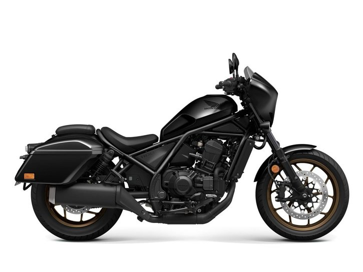

Aloittelijaystävällinen:Honda Rebel tunnetaan yhtenä parhaista moottoripyöristä aloittelijoille. Sen hallittava teho, kevyt runko ja matala istuinkorkeus tekevät siitä helpon käsitellä ja erinomaisen vaihtoehdon niille, jotka ovat vasta aloittamassa moottoripyöräilyä.
Tyylikäs muotoilu: Rebelillä on erottuva, klassinen cruiser-ulkonäkö moderneilla yksityiskohdilla höystettynä. Sen virtaviivainen muotoilu ja muokattavat vaihtoehdot antavat ratsastajille mahdollisuuden personoida pyöränsä omaan tyyliinsä sopivaksi.
Edullisuus: Vertailtuna moniin muihin moottoripyöriin, Honda Rebel on suhteellisen edullinen. Se tarjoaa erinomaisen vastineen rahoille, mikä tekee siitä erinomaisen valinnan niille, jotka haluavat luotettavan pyörän järkevällä rahalla.
Polttoainetehokkuus: Rebel tunnetaan erinomaisesta polttoainetehokkuudestaan. Tämä tekee siitä kustannustehokkaan vaihtoehdon niin arkiajoon kuin pitkille matkoillekin, mikä merkitsee säästöjä polttoainekuluissa pitkällä aikavälillä.
Suorituskyky: Vaikka se onkin aloittelijaystävällinen, Rebel tarjoaa vankan suorituskyvyn. Siinä on tarpeeksi tehoa ollakseen hauska ja kiehtova, olit sitten moottoriteillä tai kaupungin kaduilla.
Jälleenmyyntiarvo:Honda-moottoripyörät säilyttävät yleensä arvonsa hyvin, ja niitä on helppo myydä hyvällä hinnalla eteenpäin.
Kuva 1
